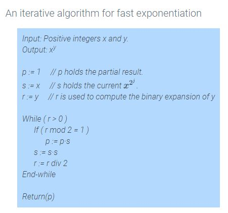
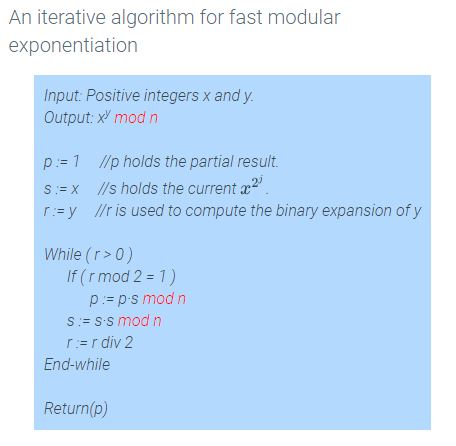

Module 7 - Fast Exponentiation Algorithms
2.18 - Fast Exponentiation
(Fast exponentiation uses successive squaring of values rather than repeated multiplication)
For a number
b
being raised to exponent
x
(so
bx), instead of multiplying b x times, instead follow these steps:
-
Convert x into binary. (example:
57
becomes
5(111)2)
-
For each "1" in that binary number, convert it into form
2x, where x is the placement in the number. (example, 7=
22,
21,
20)
-
Raise
b
to each of those exponents found in step 2. (Example:
522∗521∗520)
That makes for a faster method to find exponents for large numbers.

2.19 - Modular Exponentiation
A faster version of the method in section 2.18 exists using modular arithmetic.
